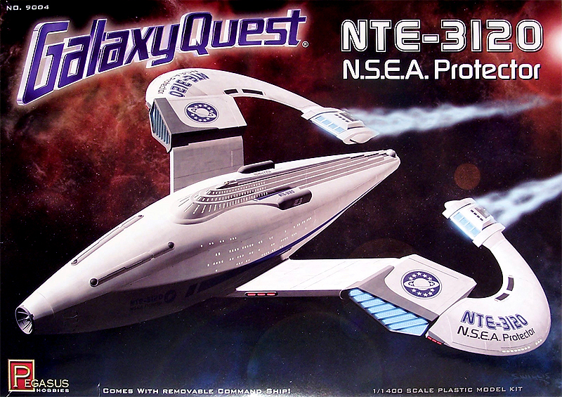
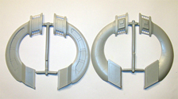
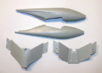
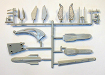
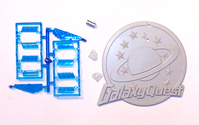
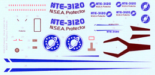
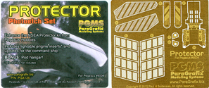

{kind=link}
{kind=link}
{kind=link}
{kind=link}
{kind=link}
{kind=link}


Pegasus Hobbies 1/1400 N.S.E.A. Protector

Kit #9004
MSRP $31.95 $28.76 from Mega Hobby
Images and text Copyright © 2010 by Matt Swan
Developmental Background
Galaxy Quest, what an excellent ‘fish out of water’ adventure movie. Released in theaters in 1999 this science fiction/comedy featuring Tim Allen and Sigourney Weaver along with many other talented actors and comedians was nearly an instant cult classic. A tongue-in-cheek play on the entire Star Trek franchise the movie provides plenty of laughs interspersed with some excellent alien work from Stan Winston Studio and amazing spacecraft scenery compliments of Industrial Light and Magic. Now more than ten years down the road a model of the ship, the N.S.E.A. Protector is finally available to fans. If you are really serious about your Galaxy Quest memorabilia they also offer a communicator/Ion Nebulizer kit. Pegasus Hobbies licensing from Paramount Pictures has brought us several very nice pieces of movie modeling already and promises to keep us entertained for some time to come.
The Kit
The kit arrives in a standard sized medium duty cardboard box with attractive movie artwork. Inside we have four sprues of light gray high pressure injection molded plastic pieces, a single large base piece, a sprue of transparent blue engine grills and four rare earth magnets. The gray plastic pieces are well cast with good detail and no obvious flaws such as sink marks or flash however they all appear to be somewhat thick. This may become advantageous later on should the modeler choose to make modifications to the build for lighting purposes. Surface detail consists of crisp, consistent engraved panel lines and recessed port holes. Interior bracing of the hull and main wing parts is accomplished with several very sturdy pins molded in place. The transparent blue pieces all appear to be well cast and demonstrate good clarity along with precise raised grill details. The four rare earth magnets are intended to hold the command module in place for display. The instructions do not show these pieces anywhere however a fellow modeler has provided this modified instruction page to illustrate the proper placement.
While the supporting pin system is very tight and does not promote easy dry fitting the main model parts do seem to fit together well with exterior surface details lining up nicely. When fully assembled this should create a very sturdy model which could be beneficial if given to children for general play. Taking a detailed inventory of the box we have thirty eight light gray parts, ten transparent blue and four magnets for a total of fifty two pieces in the box not including decals and instructions.




You may click on these small images to view larger pictures
Decals and Instructions
Kit assembly instructions arrive on a somewhat odd sized eight panel fold-out. The introductory panel contains a brief synopsis of the movie plot then moves the modeler directly into assembly. We get nine very nicely done exploded view steps that clearly illustrate the parts being dealt with however do not offer any construction tips or color suggestions until the end. Panels seven and eight contain the overall painting instructions with color chart and decal placement guides. 
The kit decal sheet appears to adhere to the markings seen in the movie with no obvious omissions. The blue used in the decal graphics appears to be several shades lighter than seen in the movie or on the box art. Other than that they appear to have good color density and print registration. When looking at them with the light across the sheet they appear suspiciously thick and may require some heavy duty setting solution or decal solvent to get a good surface conformation.
Conclusions
From all indications the kit looks to be good fun. We have good quality made parts that fit well with instructions that will get the job done. Straight from the box this appears to be a nice addition to the modeler’s shelf or even an excellent introductory model for a child – something that will capture the imagination, provide basic assembly skills and survive as a child’s play toy.
For the more advanced modeler this provides an excellent basis to go nuts. Also available from Mega Hobby is the ParaGrafix photoetch detail set for the kit. This set provides exceptionally fine engine grating detail designed to replace the raised detail on the transparent blue parts and offer a better effect when the model is lit.  Also on this sheet are some detail items for the command module and an open pod hanger. Now this model whether build straight from the box or with the ParaGrafix set simply begs to be lit up and the possibilities for wiring, fiber optics and LED placement seems nearly endless. For the advanced modeler this kit can be quite the adventure and could make for a prize winning entry to any competition table. Whatever your skill level; entry, medium or expert this can be a fun kit and I highly recommend it. I am slightly biased as I am a Galaxy Quest fan but go buy one anyway – you’ll have fun.